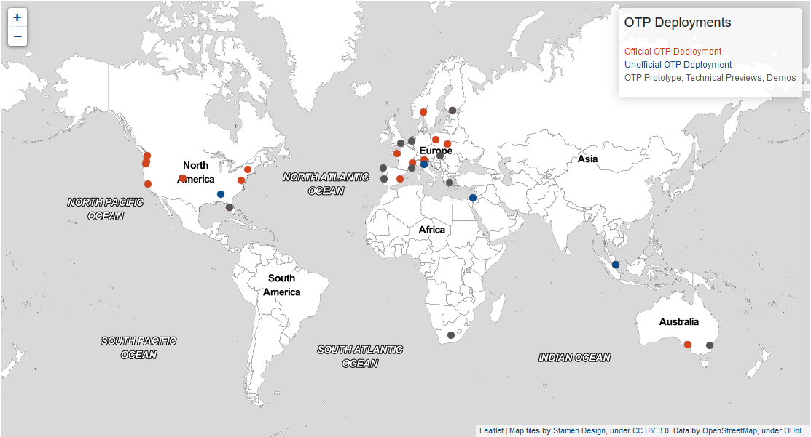
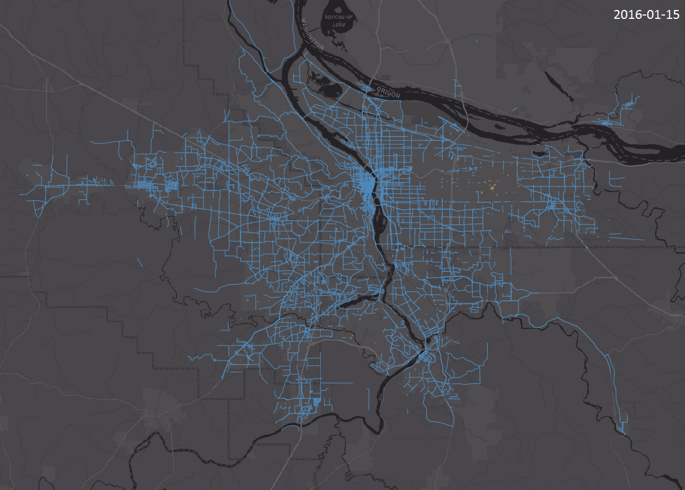

Solving the last mile problem with OpenTripPlanner (OTP), Mapzen Pelias, and open data
Seaport Hotel & World Trade Center
Boston, MA
Presenters: Madeline Steele (SteeleM@trimet.org), Tom Lin (LinT@trimet.org)
About TriMet
Founded 45 years ago, TriMet provides bus, light rail
and commuter rail service in the Portland, Oregon region.

Open data and
open source leadership
2000: Established open source
software policy2002: Released open data
2005: GTFS & Google Transit
2008: Implemented open source GIS
2009: Launch of OpenTripPlanner
2011: Adoption of OpenStreetMap
Bibiana McHugh
The Challenge
First/Last Mile problem - transit can't take you door to door
More options than ever, but we lack tools that combine them
The Opportunity
FTA's MOD Sandbox Program
$8 million for innovative, accessible and seamless multimodal service and tools
78 applicants - 11 awardees
With in-kind contributions, TriMet's award totals over $1 million
Our Proposal
Solve the last mile problem with frictionless mixed-mode trip planning
Build off robust existing tools: OpenTripPlanner and Mapzen's Pelias
Ensure replicability by using open data and open source
Key Project Partners
| OpenTripPlanner improvements | |
| Extended geocoder functionality | |
| Project coordination | |
| Local data improvements |
Data Providers
Our approach
OpenTripPlanner development
Open data improvement - OSM and OpenAddresses
Integrated payment plan by
Mapzen Pelias enhancements
1. OpenTripPlanner

Open source platform developed by TriMet and partners in 2009
Uses open data sources: OSM; GTFS; and the National Elevation Dataset (NED)
Can combine multiple modes into a single trip
Dozens of applications worldwide
OTP Deployments
Enhancements to OTP
Adding additional modes
Incorporating real-time info
Better pedestrian routing
User interface improvements
Modern, modular library
Mobile-first design
Multiple language support
2. Open Data Enhancements
Improved regional addresses for better geocoder performance
New loader for OpenAddresses (OA)
Adding sidewalk tags to OSM
photo credit: meganmckissack
New Loader for OA
Current data loading requires comfort with github
New tool (built by Mapzen) will make it easier for data maintainers to fill in this map!
OSM Sidewalk tagging
3. Integrated Payment Plan
To be prepared by moovel, who developed TriMet's mobile ticketing app →
Detailed technical roadmap to be completed by 2019
In-kind contribution